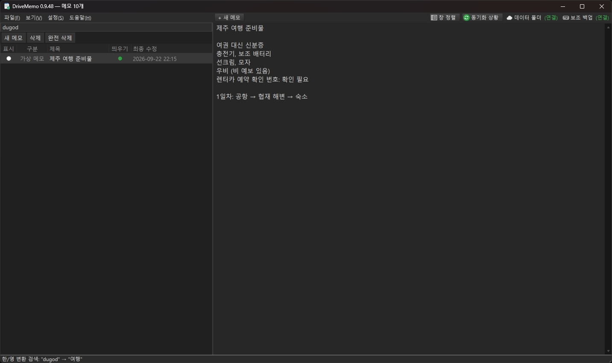

DriveMemo
집 PC, 회사 PC, 노트북에서 같은 메모를 쓰는 가벼운 윈도우 메모장 A lightweight Windows notepad that keeps the same notes on your home PC, work PC and laptop
- 저장 버튼 없이 자동 저장
- Saves automatically — no save button
- 구글 드라이브로 여러 PC 동기화
- Syncs across PCs through Google Drive
- 설치·회원 가입 없음, exe 하나
- No installer, no account — a single exe
- 한/영 실수도 찾아 주는 전체 검색
- Full-text search that even catches Korean/English keyboard mix-ups
- 메모를 별도 창으로 띄우기
- Pop notes out into their own windows
- 폴더·즐겨찾기로 정리
- Organize with folders and favorites
- 변경 기록·휴지통으로 언제든 되돌리기
- Version history and trash — undo any mistake
- 여러 메모 합치기, 일반 txt 파일도 편집
- Merge notes, and edit plain .txt files too
- 파일 보기 — PDF·워드·엑셀·그림·CSV·md·html을 앱 안에서 바로 (아래 참고)
- File viewer — open PDF, Word, Excel, images, CSV, md and html right in the app (see below)
- 책갈피 — 메모·PDF·문서 어디서나, 이름을 붙이고 목록에서 자동으로 묶어 보기
- Bookmarks — in notes, PDFs and documents alike; name them and browse them in an auto-grouped list
- 파일 첨부 — pdf·그림 등을 메모에 끌어다 놓거나 Ctrl+V로 첨부, 다른 PC에서도 보임 (그림은 앱 안에서 크게 보기)
- File attachments — drop PDFs, images and more onto a note or paste with Ctrl+V; they show up on your other PCs too (view images right in the app)
- 테마 13가지 (밝게·어둡게·회색·색 테마 10개, 랜덤·자동 변경도), 한국어 / English
- 13 themes (light, dark, gray and 10 color themes, plus random and auto-change), Korean / English
- 가볍고 빠름 (exe 하나 2MB 정도, 긴 메모도 바로 열고 부드럽게 스크롤)
- Small and fast (a single exe of about 2 MB; even long notes open instantly and scroll smoothly)
- 더 보기…More…
DriveMemo 0.9.53 다운로드download
안드로이드판 준비 중 (테스트 빌드 완료)Android version in progress (test build done)
이런 분께 추천합니다Who is it for?
- 집과 회사에서 같은 메모를 보고 고치고 싶은 분
- 메모장에 적어 두고 저장을 깜빡해서 날려 본 분
- 메모 앱은 무겁고, 윈도우 메모장은 너무 단순하다고 느끼는 분
- You want to read and edit the same notes at home and at work
- You've lost text in Notepad because you forgot to save
- Note-taking apps feel heavy, but Windows Notepad feels too bare
어떻게 동기화되나요?How does syncing work?
메모를 구글 드라이브 폴더에 평범한 텍스트 파일로 저장합니다. 각 PC에 Google Drive 데스크톱 앱이 깔려 있으면, 다른 PC에서 고친 메모가 몇 초 안에 반영됩니다. 별도 서버나 회원 가입은 없고, 메모는 내 PC와 내 구글 드라이브에만 있습니다.
Notes are saved as plain text files in a Google Drive folder. With the Google Drive desktop app on each PC, a change made on one PC shows up on the others within seconds. There is no server and no sign-up — your notes live only on your PC and in your own Google Drive.
앱 안에서 바로 보는 파일Files you can view right in the app
- PDF — 쪽 이동, 보던 쪽부터 이어 보기, 이름 붙인 책갈피, 빈 곳을 끌어 손으로 넘기기, 확대·찾기·인쇄
- 워드 (.docx) — 제목·목록·표·그림·각주까지 문서 모양 그대로
- 엑셀 (.xlsx) — 시트마다 표로, 숫자·날짜 형식과 병합 칸은 엑셀에서 보던 대로
- CSV·TSV — 표로 (머리 줄 고정, 한국어 엑셀이 저장한 CSV도)
- 그림 — 창에 맞춰 보기, 확대, 끌어서 옮기기
- md·json·html — 정리된 모양으로 (Ctrl+E로 원문 편집). 스크립트로 차트를 그리는 HTML은 그 문서만 허용해서 볼 수 있음
- PDF — go to a page, pick up where you left off, named bookmarks, drag empty space to pan, zoom, find and print
- Word (.docx) — headings, lists, tables, pictures and footnotes as in the document
- Excel (.xlsx) — every sheet as a table, with number/date formats and merged cells as Excel shows them
- CSV / TSV — as a table (header row stays on top; CSV saved by Korean Excel works too)
- Images — fit to the window, zoom, drag to move
- md, json, html — nicely formatted (Ctrl+E to edit the source). HTML that draws charts with scripts can be allowed per document
파일을 끌어다 놓으면 편집창 자리에 바로 열립니다. 보기만 하고 원본 파일은 바꾸지 않으며, 매크로는 실행하지 않고 인터넷에서 아무것도 불러오지 않습니다. 고치려면 워드·엑셀 등 연결 프로그램으로 여세요.
Drop a file in and it opens in place of the editor. It's view-only — the original file is never changed, macros never run, and nothing is loaded from the internet. To edit, open it in its app (Word, Excel, …).
검색Search
한/영 전환을 깜빡하고 쳐도 찾아 줍니다. (dugod → 여행)
Search every note at once — it even finds Korean words typed with the English keyboard layout (dugod → 여행). Jump between matches with Enter / Shift+Enter.
